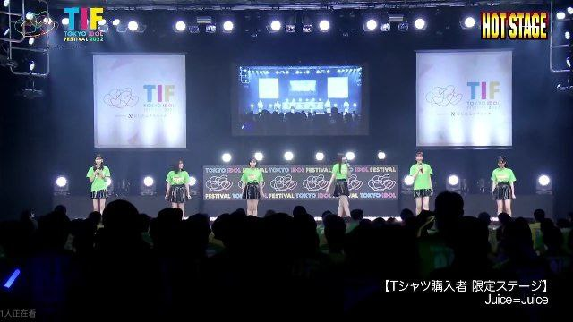

Tokyo Idol Festival 2022
Presentaciones en el Tokyo Idol Festival 2022
Juice=Juice × Niji no Conquistador
HOT STAGE - 5/8/22 - 10:00AM -10:30AM
Juice=Juice
SMILE GARDEN - 5/8/22 - 15:20PM - 15:40PM
Juice=Juice
HOT STAGE - 5/8/22 - 20:10PM - 20:40PM
Ver...
Dekami Fest 2022

Presentación en el Dekami Fest
Juice=Juice
8/8/22
Juice=Juice se presentó en el Dakami Fest
el ocho de agosto de 2022, contando solo
con siete de sus diez miembros, siendo Akari
Uemura, Ruru Dambara, Riai Matsunaga,
Kisaki Ebata, Ichika Arisawa y Risa Irie.
Ver...
el ocho de agosto de 2022, contando solo
con siete de sus diez miembros, siendo Akari
Uemura, Ruru Dambara, Riai Matsunaga,
Kisaki Ebata, Ichika Arisawa y Risa Irie.
Kakeru Fes～ 2022
Presentación en el Kakeru Fes～
Juice=Juice x Yamazaki Aoi
15/8/22 - 19:00PM
Aoi Yamazaki escribió y/o compuso muchas
de las canciones de Juice=Juice, así como "Hitori
de Ikiraresou" tte Sore tte Nee, Homete Iru no?
que interpretó con las chicas al final.
Ver...
de las canciones de Juice=Juice, así como "Hitori
de Ikiraresou" tte Sore tte Nee, Homete Iru no?
que interpretó con las chicas al final.